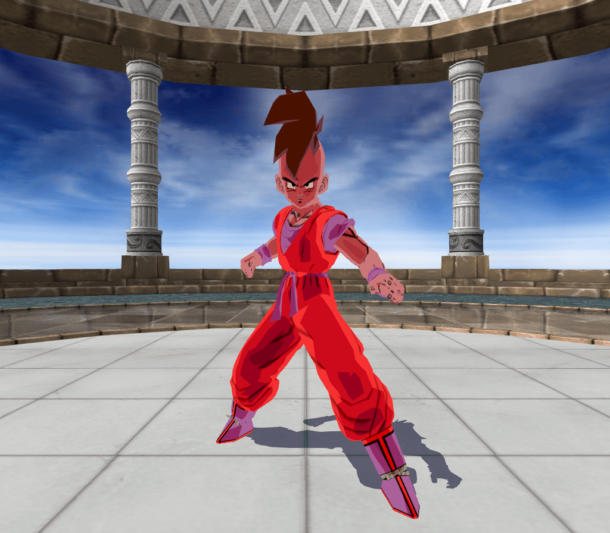
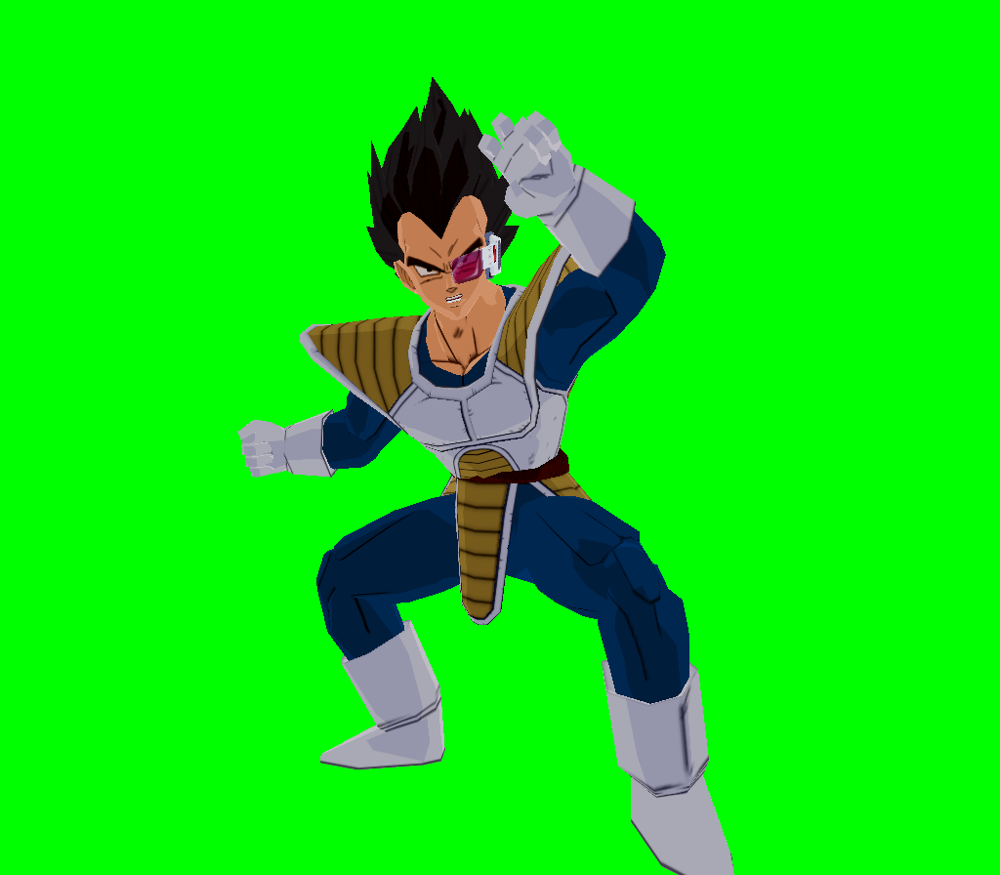
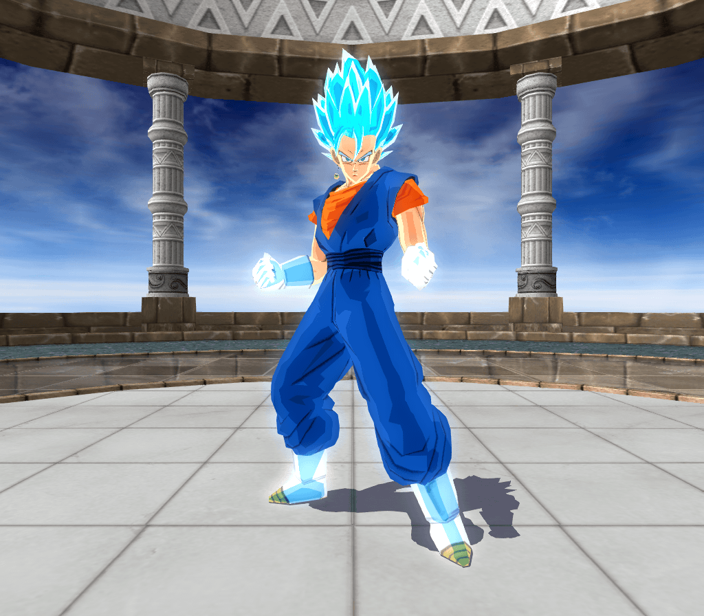
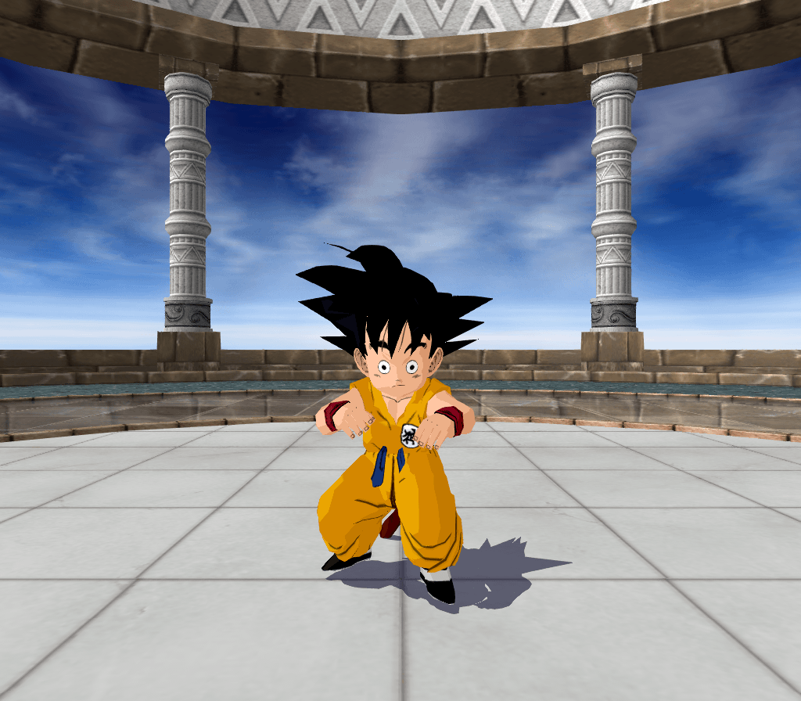
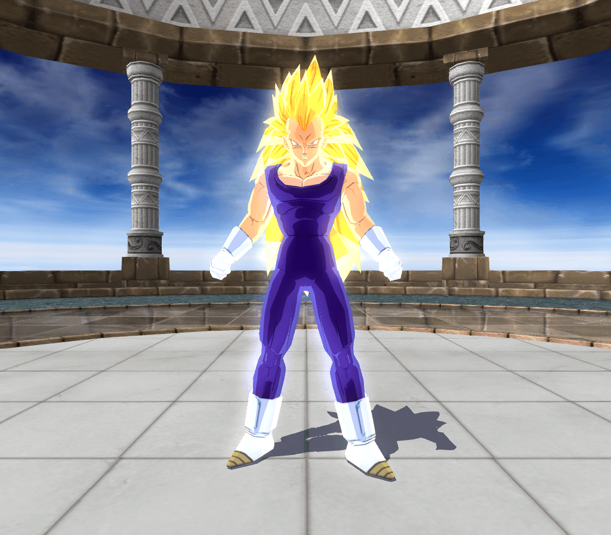
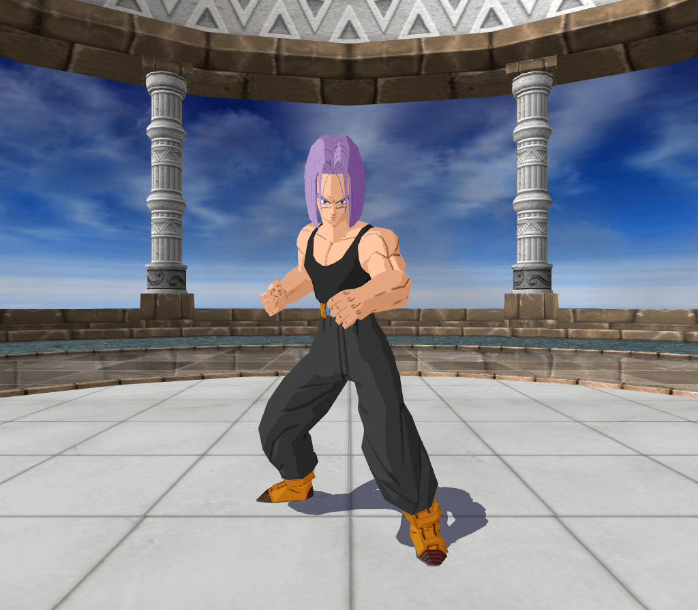

| Release Date (YY/MM/DD) |
Latest Update (YY/MM/DD) |
MOD Name | Description | Download Link |
|---|---|---|---|---|
| 2018/07/31 | 2019/07/16 | Teen Goku | Replaces Great Ape. Comes with two additional fixes:
|
 DOWNLOAD DOWNLOAD |
| 2018/07/31 | 2018/07/31 | Cyborg Tao FIX | Basically General Tao with Cyborg Tao's skin.
It is already included for Goku (Early) - False Super Saiyan, but I chose to release it separately anyway. |
DOWNLOAD |
| 2018/07/31 | 2019/05/17 | Goku (Early) - False Super Saiyan | Replaces Cyborg Tao. Comes with the Cyborg Tao FIX, which restores Cyborg Tao but in General Tao's 2nd slot. | DOWNLOAD |
| 2018/08/07 | 2019/07/17 | Eis Shenron | Replaces Great Ape King Vegeta. As a result, it comes with a fix which disables King Vegeta's transformation. | DOWNLOAD |
| 2018/08/07 | 2019/07/17 | Nuova Shenron - Shell Form | Replaces Nuova Shenron's 2nd costume with a better recolor. | DOWNLOAD |
| 2018/08/11 | 2019/06/16 |
Uub (Remastered)

|
Replaces Uub's 2nd costume with the one seen in Dragon Ball Multiverse.
Comes with a few moveset changes (mainly for Majuub), and also VFX changes. |
DOWNLOAD |
| 2018/08/14 | 2018/08/14 | Turles with Cape | Replaces Turles's 2nd costume with the one seen at the beginning of Tree of Might. | DOWNLOAD |
| 2018/09/07 | 2019/05/19 |
Zero Scouter Plan |
My very first modpack: a collaboration featuring me and WitchettyMan.
Our intention was to give a scouterless option to characters who already have (and likely don't need) scouters. |
DOWNLOAD |
| 2018/10/22 | 2019/09/26 |
Nappa with Scouter |
Gives Nappa's 1st costume a scouter like that of Vegeta's, but with a blue glass (as shown in the anime). | DOWNLOAD |
| 2018/10/22 | 2018/10/22 |
New Loading Screens |
Replaces 2 out of the 3 loading screens with Goku charging a Spirit Bomb and teleporting via Ultra Instinct. | DOWNLOAD |
| 2018/10/27 | 2019/07/23 |
Unnamed Commander |
Gives Cui's 2nd costume the appearance of a Kiwian who briefly appeared in the 97th episode of Dragon Ball Z. | DOWNLOAD |
| 2018/11/19 | 2018/11/19 |
Destroy the Planet! (Modded Death Ball) |
Gives Final Form Frieza's Ultimate Blast different animations, as well as the ability to destroy planets. | DOWNLOAD |
| 2018/11/19 | 2018/11/19 |
Supernova for Frieza - 1st Form |
Replaces 1st Form Frieza's Death Ball with a Supernova, like that of Mecha Frieza's. | DOWNLOAD |
| 2018/11/22 | 2019/06/04 |
Tenshinhan with White T-Shirt |
Gives Tien his appearance during the Cell Games. | DOWNLOAD |
| 2018/11/24 | 2018/11/24 |
Father-Son Solar Kamehameha |
Replaces Super Perfect Cell and Cell Jr's Ultimate Blasts with Modded versions of Bros. Kamehameha. | DOWNLOAD |
| 2018/12/16 | 2018/12/16 |
One-Handed Father-Son Kamehameha V1 |
My first attempt at making Super Saiyan 2 Teen Gohan's Ultimate Blast only use one hand.
In order to achieve that, I used animations from Super Saiyan Vegeta and Super Saiyan Future Gohan. |
DOWNLOAD |
| 2019/01/12 | 2019/01/12 |
Bio-Broly (Remastered) |
Replaces Great Ape Bardock. Original mod made by Chuchoman/Kinnikuchu.
Includes a censored (and uncensored) of Bio-Broly's naked appearance minutes before being deformed. |
DOWNLOAD |
| 2019/01/20 | 2019/04/28 |
Majin Buu (Remastered) |
Replaces Evil Buu and Super Buu's 2nd costumes with Zen Buu from Dragon Ball Multiverse.
Most importantly, it gives Evil Buu better Blast 1's and the ability to transform into Super Buu. |
DOWNLOAD |
| 2019/01/22 | 2019/01/22 |
Adult Gohan (Remastered) |
Gives Adult Gohan his father's gi, as well as the ability to transform into Ultimate Gohan, like in Budokai 3. | DOWNLOAD |
| 2019/02/10 | 2019/07/21 |
Hell Fighter #17 |
Replaces Spopovich with an evil clone of Android #17, who is able to fuse with said #17 into Super Android #17. | DOWNLOAD |
| 2019/02/24 | 2019/02/24 |
Red Z-Items turned into Skill Z-Items |
Red Z-Items are hidden Z-Items that the developers used for game modes like Dragon History and Ultimate Battle.
This mod turns them into yellow ones, which means they can be bought in the Item Shop. Results may vary in Duel Mode, since not every Red Z-Item in question actually works as intended. |
DOWNLOAD |
| 2019/02/28 | 2019/02/28 |
Ginyu in Vegeta's Body and Vegeta in Goku's Body |
Based on a what-if scenario where Captain Ginyu's 2nd Body Change ends up being successful.
This mod gives Vegeta (Scouter) the look of Goku (Mid), and Captain Ginyu the look of Vegeta with Jeice's scouter. |
DOWNLOAD |
| 2019/03/06 | 2019/10/24 |
Vegeta (Remastered) |
Gives every Vegeta besides Vegeta (Scouter) more outfits, such as the one seen in Dragon Ball GT.
It also gives Vegeta (second form) the ability to transform into Majin Vegeta or Super Saiyan 4 Vegeta. |
DOWNLOAD |
| 2019/05/16 | 2019/05/18 |
Goku (Early) - Kaio-ken |
Easily one of my favorite mods, with the most effort I've ever put in. Replaces Great Ape Fasha.
Comes with two versions, and one fix for both of them (which disables Fasha's ability to transform). Version 1 works for Goku (Early) - False Super Saiyan, while Version 2 doesn't. |
DOWNLOAD |
| 2019/05/29 | 2019/05/29 |
Piccolo (Early) - Giant Form |
Replaces Great Ape Raditz, which is why it comes with a fix that disables Raditz's ability to transform. | DOWNLOAD |
| 2019/06/02 | 2019/06/02 |
Piccolo with Turban and No Cape |
Gives both Piccolo (Early) and Piccolo (End) just the turban, with the only difference being in the belt.
This mod comes in two versions: one for Piccolo (Early) - Giant Form, the other containing just the mod. |
DOWNLOAD |
| 2019/06/09 | 2019/06/09 |
Future Gohan with Cybernetic Arm and Future Gohan with One Arm |
The 1st mod is based on a what-if scenario where Bulma actually builds Future Gohan a new arm.
The design for it was wonderfully animated by Anomian on Deviantart, but I tweaked it a bit for the mod. Unfortunately for Gohan, the 2nd mod is him missing his left arm after what the Androids did to him. |
DOWNLOAD |
| 2019/06/13 | 2019/06/13 |
Super Kaio-ken (Modded Blast 1) |
Replaces Super Saiyan Goku (End)'s Saiyan Soul with a Modded version of Goku (Early)'s Kaio-ken.
This time, the red aura stays permanently, and it even hurts the opponent, unless a Super/Ultimate Attack is fired. Also, the Kaio-ken effect lasts longer because the Blast 1 assures that Goku goes in MAX POWER Mode. |
DOWNLOAD |
| 2019/06/16 | 2019/06/16 |
Ghost Nappa |
Based on an in-joke from season 2 of DBZ Abridged, this mod turns Nappa into a ghost.
For comedic reasons, his Aura Charge is disabled, and his 1st Blast 1 is renamed to "Ghost Soul". |
DOWNLOAD |
| 2019/06/18 | 2019/06/18 |
Tenshinhan (Dragon Ball) |
Gives Tien his appearance from the 22nd World Martial Arts Tournament,
in which he wears purple pants (instead of green), and has no scar on his chest... yet. |
DOWNLOAD |
| 2019/06/21 | 2019/06/21 |
Power Up to the Very Limit FIX |
This mod fixes Super Saiyan 3 Goku (End)'s 2nd Blast 1, so that it actually boosts all stats by 5%,
the same way it would for any other character. Originally, it would only grant MAX POWER Mode. |
DOWNLOAD |
| 2019/06/23 | 2019/06/23 |
Angry Kamehameha with Better VFX |
Replaces the VFX used for Super Saiyan Goku (Mid)'s Angry Kamehameha with the ones from Nappa's Kapa.
It also gives Super Saiyan Goku (End) a chargeable variant of this move, and both of them say "YOU FOOL!" upon firing it, just like in the anime. This mod comes in two versions: one assumes you have Super Kaio-ken installed, the other doesn't. |
DOWNLOAD |
| 2019/06/28 | 2019/06/28 |
Piccolo with Whis Gi |
Based on a what-if scenario, where Piccolo is also trained by Whis, not just Goku and Vegeta.
The design for this mod was inspired by Piccolo's 2nd outfit on Super Dragon Ball Z, as well as a particular design made by Namekiankai on Deviantart. In addition, Piccolo (Early) is able to transform into a Super Namekian Blue, which is a reskin of Piccolo (End). |
DOWNLOAD |
| 2019/07/05 | 2019/09/26 |
Trunks (Sword) with Battle Armor |
Based on his unlockable costume in Budokai 3, this mod gives Trunks (Sword) his father's battle armor,
while still keeping his sword, whose holder has been recolored to resemble that of the Budokai series. |
DOWNLOAD |
| 2019/07/11 | 2019/07/11 |
Red/Green/Blue Screen 
|
Originally made by my mentor iManjiGaming for his videos. Replaces Outer Space, comes with 3 colors. | DOWNLOAD |
| 2019/07/28 | 2020/08/20 |
Vegito/Gogeta (Remastered) |
Inspired by several modders who have made such fusion revamps before me.
My take on it consists of many moveset changes and new costumes. |
DOWNLOAD |
| 2019/08/07 | 2019/08/07 |
Vegito Blue 
|
Replaces Great Ape Nappa. Comes with Super Saiyan Blue Gogeta as his 2nd costume,
as well as two versions of said mod: one with additional files for Vegito/Gogeta (Remastered), the other without them. |
DOWNLOAD |
| 2019/09/10 | 2019/11/15 |
Kid Goku Doll 
|
Replaces Grandpa Gohan's 2nd costume, because his Special Attacks are the closest to Kid Goku's.
Special Thanks to WitchettyMan for requesting and fixing the textures for this mod! |
DOWNLOAD |
| 2019/09/28 | 2019/09/28 |
Bardock - Super Saiyan |
Replaces Kibito Kai. Comes with a fix that disables Supreme Kai's transformation, as well as a scouterless costume. | DOWNLOAD |
| 2019/10/04 | 2019/10/04 |
Goku (Remastered) |
Includes Angry Kamehameha as Super Saiyan Goku (End)'s 1st Blast 2,
as well as the Power Up to the Very Limit fix for Super Saiyan 3 Goku (End). This mod also comes with many moveset and costume changes, particularly for his Super Saiyan 2/4 forms. |
DOWNLOAD |
| 2019/10/13 | 2019/10/13 |
Cell (Remastered) |
Improves Cell's 2nd costume so that it looks more like Cell Jr, as shown by the orange eyes and skin tone.
Replaces Semi-Perfect Cell's Drain Life Cell with Galick Gun, and gives Perfect Cell the ability to detransform. |
DOWNLOAD |
| 2019/10/23 | 2020/09/01 |
Super Saiyan God Goku/Vegeta |
Gives Goku and Vegeta their Super Saiyan God forms as alternate costumes of their Super Saiyan 4 forms. | DOWNLOAD |
| 2019/11/06 | 2019/11/06 |
Dragon Rush (Modded Blast 2) |
Replaces Master Roshi - MAX Power's Kamehameha with the Turtle School Ultimate Fist from Budokai Tenkaichi 2.
This way, he gets to keep both rushes, although Blast Combos are unfortunately disabled. |
DOWNLOAD |
| 2019/11/20 | 2019/11/20 |
Teen Gohan with Movie 8 Outfit |
Gives Teen Gohan the outfit he's seen wearing in the first Broly movie. | DOWNLOAD |
| 2019/11/23 | 2019/11/23 |
Vegeta (second form) - Super Saiyan 3 
|
Replaces Yajirobe with Vegeta's what-if form known from the Raging Blast series.
As expected, it comes with two versions: one with additional files for Vegeta (Remastered), the other without them. |
DOWNLOAD |
| 2019/12/05 | 2019/11/23 |
Goku (End) - Super Saiyan Blue |
Replaces Salza, which is why it includes a fix that puts Salza in Jeice's 2nd costume.
The mod also comes with additional files for these conflicting mods:
|
DOWNLOAD |
| 2019/12/14 | 2019/12/14 |
Twelve Mods of Christmas |
As the title says, it comes with 12 random mods I made around the same time:
|
DOWNLOAD |
| 2019/12/29 | 2019/11/23 |
Legendary Super Saiyan (Modded Scenario) |
The entirety of this scenario takes place in Namek rather than Dying Namek, since that's how it was in the anime.
Unfortunately, the planet does NOT blow up on its own. Although, Goku (Mid) starts out the battle with his undershirt still intact (well, it's still damaged a bit). |
DOWNLOAD |
| 2020/01/27 | 2020/01/27 |
Vegeta (second form) - Super Saiyan Blue |
Replaces Syn Shenron. Comes with a fix that adds Syn Shenron as Omega Shenron's 2nd costume. It includes 3 different versions of the mod as well:
|
DOWNLOAD |
| 2020/01/31 | 2020/01/31 |
Golden Frieza |
Replaces Great Ape Bardock. Comes with two versions of the same fix: one containing additional files
for the Zero Scouter Plan, the other containing just the mod. Point is, Bardock can no longer transform. |
DOWNLOAD |
| 2020/02/04 | 2020/02/04 |
Destructo Disc for Perfect Cell |
Replaces Perfect Cell's Barrage Death Beam with a recreation of his Destructo Disc from Budokai Tenkaichi 2.
As expected, because this mod comes in conflict with Cell (Remastered), there are two versions of this mod. |
DOWNLOAD |
| 2020/04/16 | 2020/04/16 |
Future Trunks from DBS Flashback 
|
Gives Future Trunks his appearance from the flashback in the 58th episode of Dragon Ball Super. | DOWNLOAD |
| 2020/04/23 | 2020/04/23 |
Teen Gohan (Semi-damaged) |
Gives Teen Gohan a slightly battledamaged look, as well as a huge blood splatter on his forehead and lips. | DOWNLOAD |
| 2020/05/10 | 2020/05/10 |
Super Buu - Piccolo/Vegeta Absorbed |
Gives Super Buu two new absorptions from Budokai 2/3 as alternate costumes of Buutenks and Buuhan. | DOWNLOAD |
| 2020/05/14 | 2020/05/14 |
What If Cell Turned Good |
Based on MasakoX's What-If series about a pure-hearted version of Cell, with blue eyes and Piccolo's gi. | DOWNLOAD |
| 2020/06/14 | 2020/06/14 |
Customized Soundtrack (Version 1) |
This mod will only work for vanilla ISO's. Other ISO's out in the wild are already personalized
(modified to the person's liking), so the mod installation process will obviously be different. It adds only four of Budokai Tenkaichi 2's best songs: Gatebreaker, Mind Space, Lost Courage, and Dark Half. |
DOWNLOAD |
| 2020/06/19 | 2020/06/19 |
False Super Saiyan (Modded Scenario) |
This mod will work as intended IF AND ONLY IF the Goku (Early) - False Super Saiyan mod is installed first.
Otherwise, there will be no changes made to the scenario, since the transformation sequences will be skipped. |
DOWNLOAD |
| 2020/07/01 | 2020/07/01 |
Ultra Divine Water (Modded Z-Item) |
Like the case with Customized Soundtrack (Version 1), this mod will only work for vanilla ISO's.
It adds a new Z-Item that increases all stats by 7.5% for each health bar (10000 HP) lost, but the chosen fighter will have to start out the battle with one health bar less. |
DOWNLOAD |
| 2020/07/11 | 2020/07/11 |
Custom Special Quotes (Vive vs. Great Ape Baby) |
This mod will only work for Modding Revolution, since my self-insert is exclusive to that ISO.
As shown in the video, it allows Vive to reach an existential crisis upon encountering the Golden Oozaru. |
DOWNLOAD |
| 2020/08/04 | 2020/08/04 |
Goku Strikes Back (Modded Scenario) |
If Demon King Piccolo gets killed early (before the last R3 event occurs), then the mod will
make Future Trunks take Kid Goku's place (instead of Chi-Chi) right when Tambourine appears. Because of the great difference in power, Future Trunks is able to easily take care of him. Also, at the beginning of the scenario, Demon King Piccolo doesn't start out with super armor. However, upon the activation of the 1st R3 event, that effect comes back. |
DOWNLOAD |
| 2020/08/09 | 2020/08/09 |
Meteor Smash (Custom Assist Rush) |
Changes Super Saiyan Goku (Mid)'s Meteor Smash so that Super Saiyan Vegeta shows up
during the beginning of the attack, but not the end, since the rush cuts out prematurely. |
DOWNLOAD |
| 2020/08/25 | 2020/08/25 |
Custom Special Quotes (Ultimate Gohan vs. Buutenks) |
Allows Ultimate Gohan and Buutenks to interact with one-another, just like in the anime.
For comedic effect, their entrance animations have been changed to that of Goku (Early) and Vegeta (Scouter)'s. |
DOWNLOAD |
| 2020/08/29 | 2020/08/29 |
Voice Pack for Ultra Instinct Goku |
Replaces Super Saiyan 4 Goku (GT)'s "talkative" voice lines with empty ones,
and backs up the rest of the screams with low-pitched Great Ape screams. |
DOWNLOAD |
| 2020/11/01 | 2020/11/01 |
Wasteland (Budokai Tenkaichi 2) |
Replaces Wasteland - Noon with the Budokai Tenkaichi 2 version of said map.
Because of the map portait being modified as well, this mod only works on vanilla ISOs. For personalized/modified ISOs, the mod installation procedure will be different. |
DOWNLOAD |
| 2020/11/06 | 2020/11/06 |
Customized Soundtrack (Version 2) |
Much like the previous version, this mod only works on vanilla ISOs (unless personalized changes are made).
It now features the rest of the Budokai Tenkaichi 2 soundtrack, and not just 4 songs that I liked. |
DOWNLOAD |
| 2020/11/20 | 2020/11/20 |
Tenkaichi 2 NPCs in Tenkaichi 3 |
Consists of non-playable characters found in Budokai Tenkaichi 2, now ported to the sequel. The list of characters is as follows:
|
DOWNLOAD |
| 2021/02/03 | 2021/02/03 |
Quiet Rage (Modded Blast 2) and One-Handed Father-Son Kamehameha V2 |
Replaces Super Saiyan 2 Teen Gohan's Gekiretsu Madan with a recreation of his rush from Raging Blast 1/2.
Also includes the 2nd and last version of One-Handed Father-Son Kamehameha. Unlike the previous version, it only uses Future Gohan animations. Actually, both of these mods do. |
DOWNLOAD |
| 2021/02/03 | 2021/02/03 |
Gotenks (Remastered) |
Replaces Gotenks's 2nd costume with a Gogeta-themed recolor, and gives Gotenks new Special Attacks
for his base (Victory Crash & Big Tree Kamehameha) and Super Saiyan 3 forms (Super Kamehameha). Also swaps the animations used for Super Saiyan 1/3 Gotenks's False Courage and Finish Sign. |
DOWNLOAD |
| 2021/04/24 | 2021/04/24 |
Hyperhyperbolic Time Chamber |
Extends Hyperbolic Time Chamber's barriers to the point where the barrier texture doesn't even show up. | DOWNLOAD |
| 2021/04/28 | 2021/04/28 |
Mecha Frieza with Green/Red Scouter |
Design inspired by nicocolors's lock screen on Twitter.
Gives Mecha Frieza a fully-working scouter that comes in green (costume 2) or red (costume 3). |
DOWNLOAD |
| 2021/05/07 | 2021/05/07 |
Tenkaichi-Styled Enhanced Costumes |
Gives the following characters their DLC costumes from Raging Blast 2:
|
DOWNLOAD |
| 2021/10/31 | 2021/10/31 |
Nappa (All Main Forms) |
A modpack I made on Halloween to mock the living crap out of the "GOKU ALL FORMS CHETADO" YouTube trend.
There are two versions of this modpack: one with Nappa's Battle Armor, and the other without it. |
DOWNLOAD |
| 2022/01/02 | 2023/02/04 |
No Holds Barred (Tenkaichi 2 Modpack) |
Imports the following characters from Budokai Tenkaichi 3 in place of Budokai Tenkaichi 2 alternate costumes:
**These costumes have their own transformations. |
DOWNLOAD |
| 2022/04/01 | 2022/04/01 |
Flame Shower Bruuuh (Modded Blast 2) |
A mod I made on April Fools, once again to make fun of the clickbait Dragon Ball YouTubers rely on.
The premise is that the VFX are kinda brown, and they now come out of Evil Buu's butt instead of his mouth. |
DOWNLOAD |
| 2022/05/28 | 2022/05/28 |
Multiverse Tournament Stage |
Because of the map selection images and all that, this mod only works on vanilla ISOs,
unless you either customize the mod yourself or install just the map files and nothing else. Original mod made by Chuchoman/Kinnikuchu. |
DOWNLOAD |
| 2022/07/02 | 2022/07/02 |
Change The Future (Modded Blast 2) |
Replaces Super Saiyan Trunks (Sword)'s Burning Storm with a recreation of his rush from the Raging Blast series. | DOWNLOAD |
| 2022/07/28 | 2022/07/28 |
Fusion vs. Potara (Modded Scenario) |
Replaces Dream Battle: Goku vs. Arale with a recreation of the Fusion and Potara scenario from Raging Blast 1. | DOWNLOAD |
| 2022/09/02 | 2022/09/02 |
Unexpected Help (Modded Scenario) |
Allows you to play as Trunks (Sword) instead of Devilman in Unexpected Help.
Everything else takes off from there, because many changes have been made to the scenario's structure. |
DOWNLOAD |
| 2022/09/24 | 2022/09/24 |
Sparking of the Dawn - SDBZ Tribute
(Budokai Tenkaichi 2/3 Modpack) |
By far, the greatest modpack I've ever made. It was in the works since late June of 2022.
Here are the characters who have gotten the privilege of getting recolored:
Obviously, because Budokai Tenkaichi 2's costume limit is set to 6, there will be more recolors for that game. |
DOWNLOAD |
| 2023/01/29 | 2023/01/29 |
Cooler's Armored Squadron |
In my video showcasing the mods, I replaced Slug and Giant Slug.
However, since the modpack comes with instructions, you'll have to decide the replaced characters on your own. Although Neiz and Dore are the stars of the show, Salza's animations have been replaced with Tenkaichi 2 ones. |
DOWNLOAD |
| 2023/02/05 | 2023/02/05 |
Gokule (Goku and Hercule Fusion) |
Although the mod comes with instructions, it has to replace Spopovich (unless you know what you're doing).
Includes the costume files for Goku (End) and Hercule, since those are needed for the fusion sequence to work. Otherwise, you can choose to install just the what-if fusion from Budokai 2 and nothing else. |
DOWNLOAD |
| 2023/03/20 | 2023/03/20 |
Hell's Brigade: The Majin Crusaders |
Introduces three more Majins featured in various What-If games: Majin Cell, Majin Frieza and Majin Piccolo.
Thankfully, this modpack comes with instructions, so you'll have to decide the replaced characters on your own. |
DOWNLOAD |
| 2023/03/24 | 2023/03/24 |
Tenkaichi-Styled Zenkai Battle Recolors |
As of now, this modpack only supports Goku (Mid) and Goku (End), based on what Metal and I had to work with.
More characters may be included in the future - whether that promise is empty or not, only time will tell. To compensate, the modpack comes with a total of 12 recolors: 4 for Goku (Mid), and 8 for Goku (End). It also comes with a nice bonus provided by BenZ: shirtless battledamaged costumes for the Buu Saga recolors. |
DOWNLOAD |